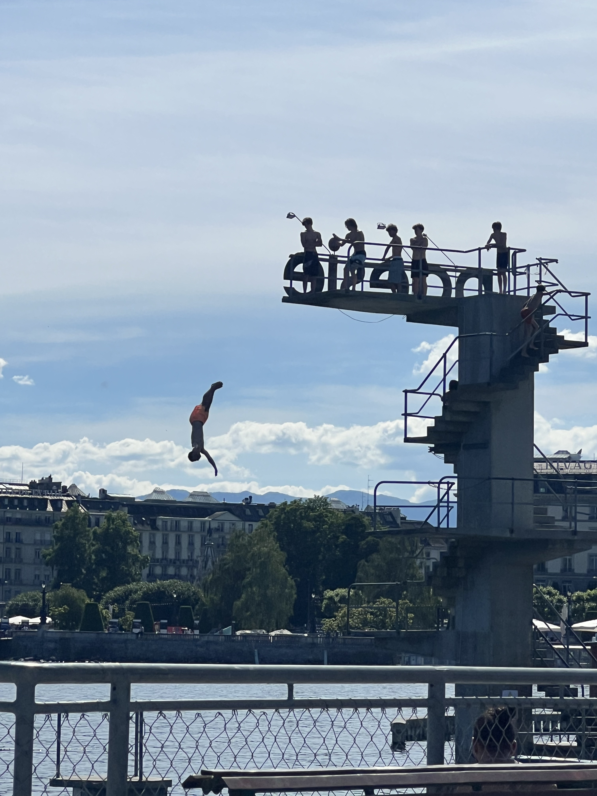
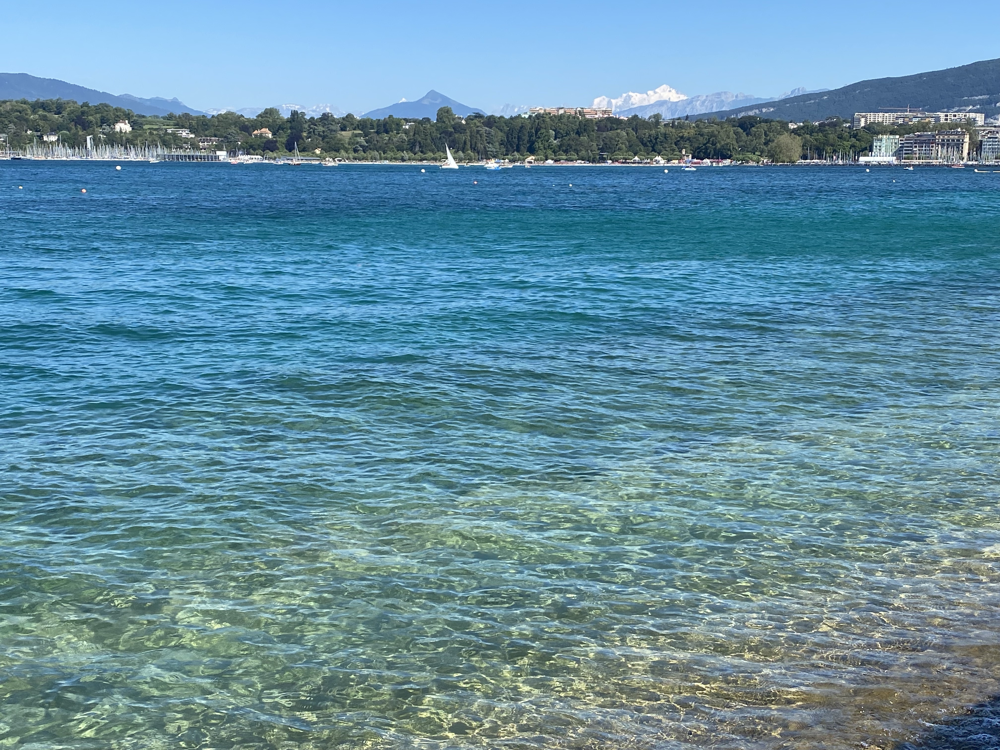
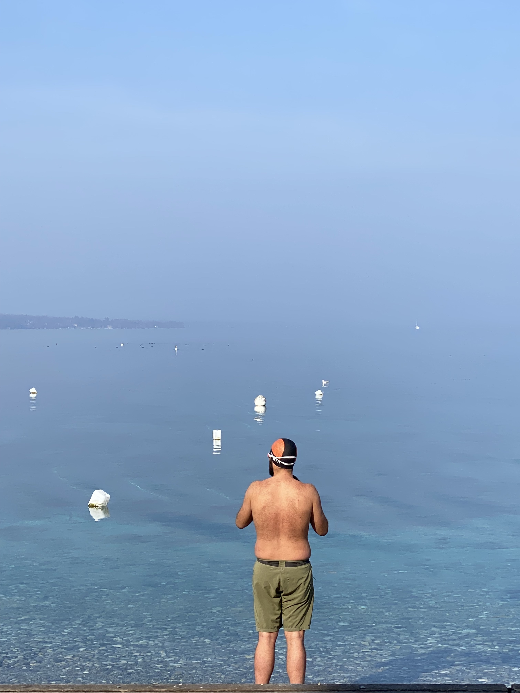
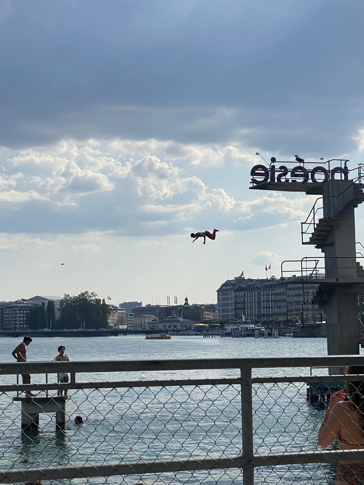
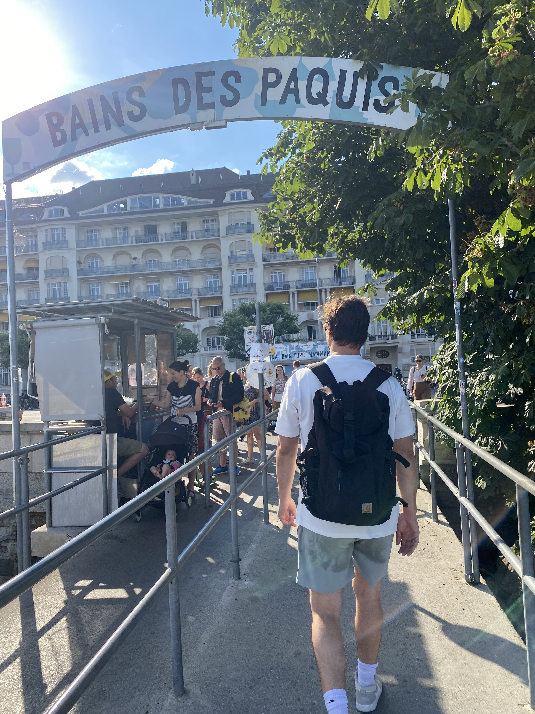
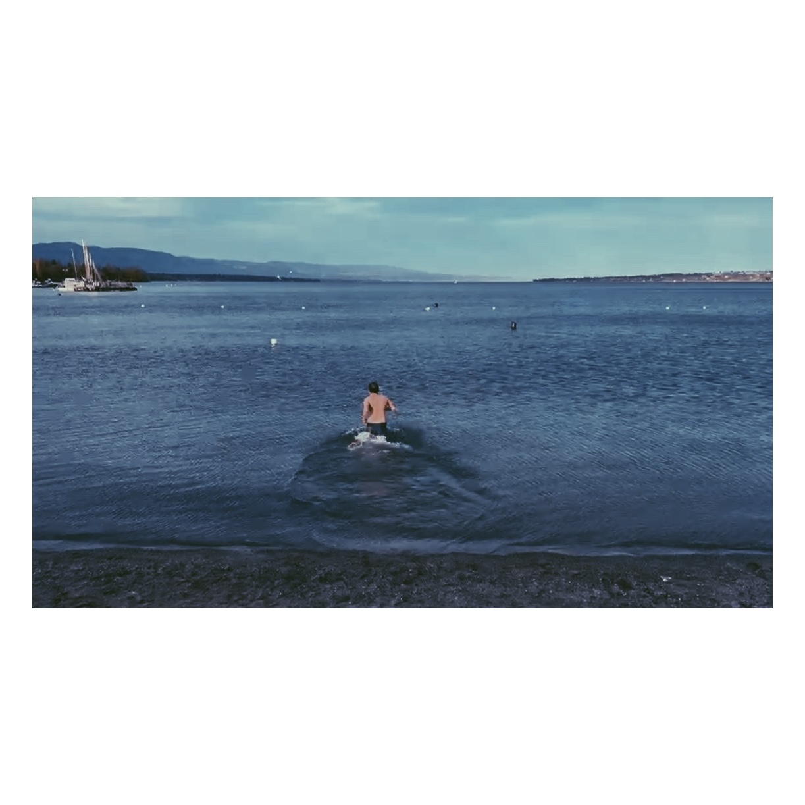
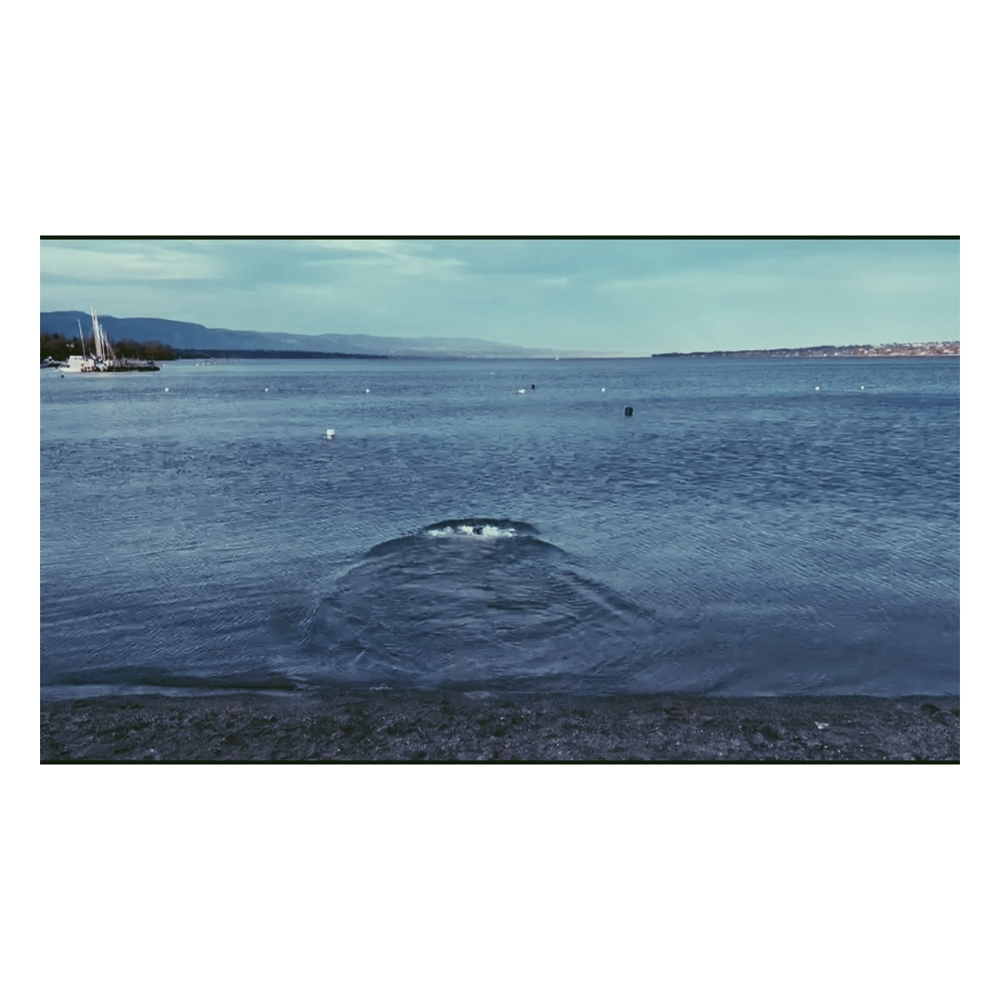
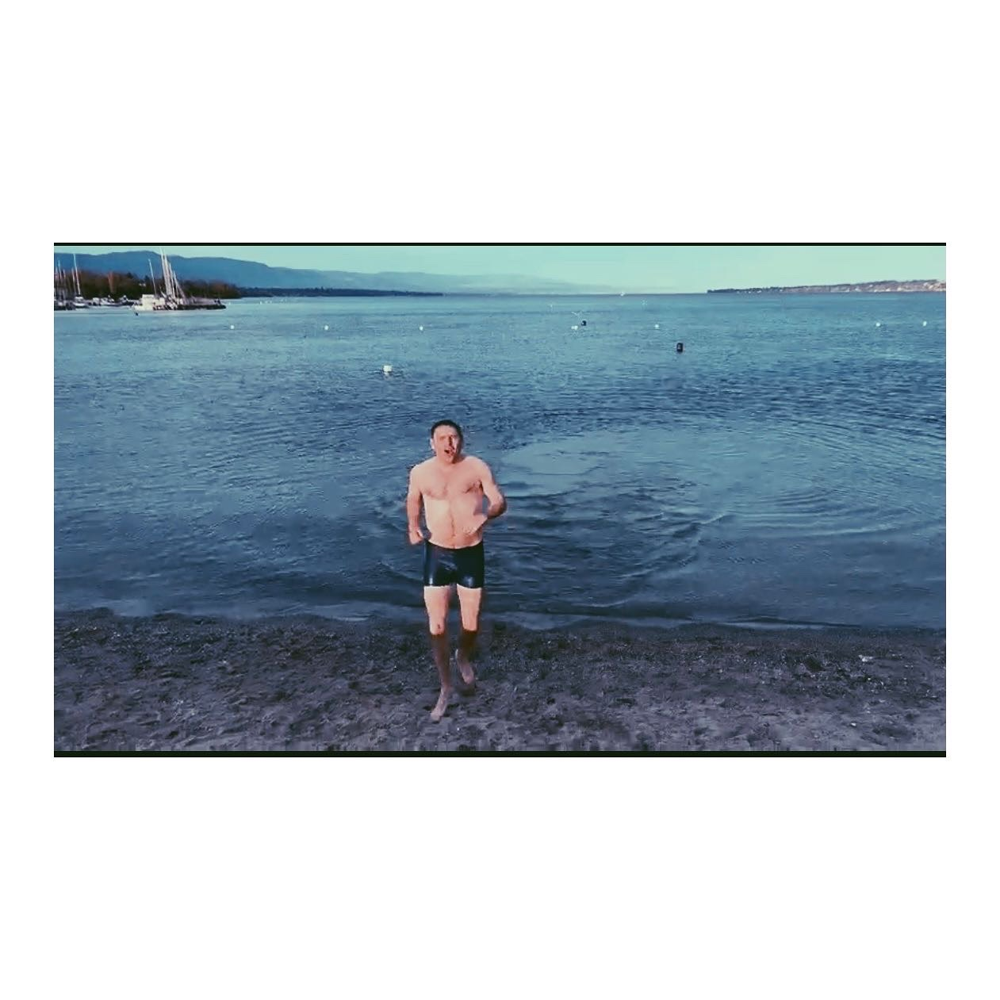

Pâquis · Geneva · Switzerland
Bains des Pâquis
70s vibes on Lac Léman.
When I first moved to Geneva I assumed this was the kind of place you skip — too easy to find, on every tourist map, probably not where the locals actually go. That was wrong. I've been corrected by the city many times since.
The Bains des Pâquis is a Geneva institution in the truest sense — not a tourist trap dressed up as one, but the real thing. A floating bathing complex on the lake, opened in 1932, with a proper seventies vintage feel that's completely authentic. The diving board. The wooden jetties. The hammam that's been running for decades. The bar with cold rosé and a Greek salad that is, genuinely, a good Greek salad.

In summer, the water is the colour of the Mediterranean — turquoise and clear enough to see the bottom. You jump in, surface, look up, and there are the French Alps behind the Geneva skyline. It's one of those moments that keeps catching you off-guard even after years of living here.


"You jump in, surface, and there are the French Alps. Geneva keeps catching you off-guard."
The food and drink is better than it needs to be. A full bottle of cold rosé is the move on a warm afternoon. The Greek salad is genuinely good. They do fondue and oysters — I haven't tried either, but something that's been running this long doesn't get it wrong. There's also free drinking water if you need to fill up a bottle, which is a very Geneva touch.
The sauna and hammam facility is part of the same complex — open year-round, been there forever. I've never done it but I intend to, which might be the most honest thing I can say about it.


Old ladies go in with little caps and gloves through the cold months. The latest I've jumped in was December 31st — a wonderful way to end the year, highly recommended. I tried February once and it was genuinely too cold for me, but the regulars were fine. If that's you, you'll love it here year-round.



If I didn't have small children and more time, I'd like to go there on the morning cycle to work — lake jump and sauna, then keep going up the hill to Nations. One day.
The point is: don't overlook it because it's famous. That's the wrong filter. It's famous because it's genuinely one of the best places in the city. It puts you right on the water, which is really what everyone wants when they come to Geneva, and it gives you a view of the city you can't get anywhere else.